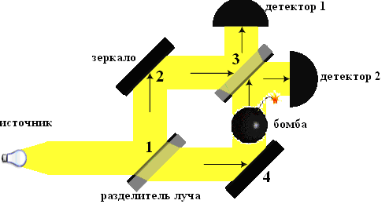
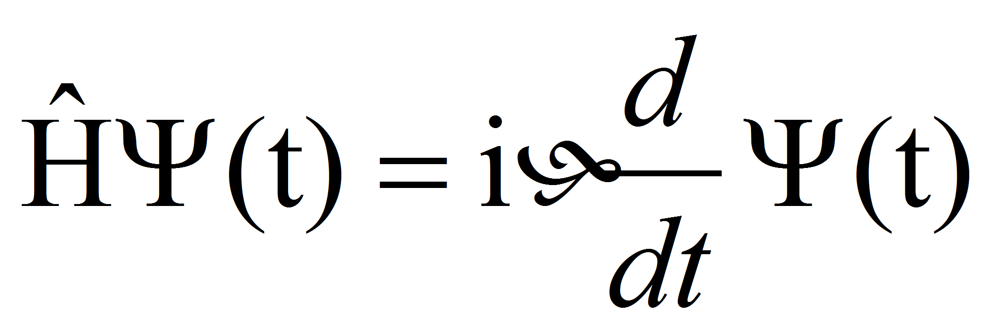
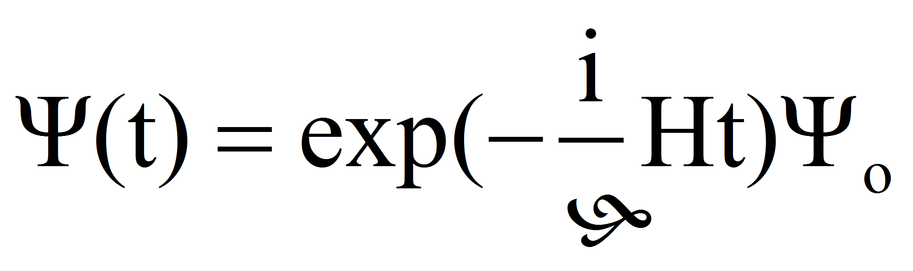

Любопытен следующий случай, предложенный Элитзуром и Вайдманом 2: На рисунке представлен интерферометр, имеющий два оптических входа:

Фотон выстреливается в точку 1, где установлено полупрозрачное зеркало. Он может попасть в точку 3, пройдя по пути 123, либо 143. Если нет возможности проверить, по какому пути прошел фотон, то в точке 3 мы будем наблюдать интерференционную картину. Пусть при интерференции детектор 2, установленный вблизи точки 3, всегда даёт ответ “да”, а детектор 1 всегда даёт ответ “нет”.
Однако если каким-либо образом можно проследить, по какому пути прошел фотон, интерференция не наблюдается и тогда детектор 1 может дать ответ “да. Теперь представьте, что человек раздобыл две разные бомбы. Одна из них никогда не взорвется, если на её поверхности окажется фотон, а другая может взорваться, если фотон достигнет её поверхности.
Можно ли провести эксперименты с фотонами и понять, взорвётся ли одна из бомб, не взрывая её? С точки зрения классической физики это невозможно, однако какой ответ даёт квантовая физика? Проведём три эксперимента. Посмотрим, что будет происходить когда
I. - бомбы вообще нет.
II. - установлена бомба, которая не взрывается, если на её поверхности окажется фотон, он просто полетит сквозь неё.
III. - установлена бомба, которая взрывается, если на её поверхность попадает фотон.
Итак,
I. - Когда бомбы нет, можно наблюдать интерференционную картину. Детектор 2 даст ответ “да”, а 1- “нет”.
Теперь установим бомбу на входе 143.
II. - В данном случае между бомбой и фотоном не будет взаимодействия, и мы будем наблюдать интерференционную картину. Детектор 2 даст ответ “да”, а детектор 1 всегда даёт ответ “нет”. Так, этот случай аналогичен первому.
III. - Теперь мы имеем дело с бомбой, которая взрывается от попадания фотона на её поверхность. Здесь следует принять во внимание, что для квантовой частицы важна сама вероятность взрыва (из-за того, что бомба может взорваться, можно знать путь, пройденный фотоном в интерферометре), и интерференционная картина исчезает. Существует любопытная вероятность отрицательного эксперимента, когда бомба, установленная в 143, может взорваться, но этого не происходит, так как фотон движется по пути 123! Тогда детектор 1 даёт ответ “да”. Интерференционная картина исчезает, и мы поймём, что оружие взорвется, если фотон коснётся его поверхности, не взрывая бомбы! Удивление состоит в том, что в классической физике мы не могли бы получить такую информацию. Квантовая частица, проходя по 123 как бы “чувствует” наличие бомбы в 143.
Для студентов подойдёт следующее объяснение, данное на языке математики:
В квантовой механике состояние фотона описывает волновая функция Ψ.
Волновая функция используется в квантовой механике для описания чистого состояния системы. Физический смысл волновой функции заключается в том, что согласно копенгагенской интерпретации квантовой механики плотность вероятности нахождения частицы в данной точке пространства в данный момент времени считается равной квадрату абсолютного значения волновой функции этого состояния в координатном представлении.
Существуют принципиально два различных способа измерения во времени вектора состояния:
детерминированный, согласно уравнению Шредингера
скачкообразный, согласно постулату редукции волнового пакета
Математический аппарат устроен так, что если нет
наблюдения над системой, то волновая функция изменяется по уравнению
Шрёдингера.
,
(*)
Т.е , где Ψo= Ψ(t)|t=to
Если наблюдения есть, то работает принцип редукции волнового пакета (скачкообразного изменения волновой функции при измерении). При измерении волновая функция Ψ(t) скачком (индетерминированно) превращается в собственную функцию оператора наблюдаемой Â. То есть
Если Âun=anun,
То Ψ(t)→ un
(Оператор — это математический символ для обозначения действия, которое нужно совершить над некоторой функцией, чтобы однозначно получить другую функцию).
Состояние фотона описывает волновая функция Ψ. Прибору сопоставляется оператор Â. Â имеет два собственных значения: a1 и a2. Пусть собственное значение a1 соответствует случаю, когда бомба не взрывается, а a2- когда взрывается. Тогда Ψ превращается либо в u1, либо в u2 соответственно.
Âu1= a1 u1
Âu2=a2u2
Объяснение закончено.